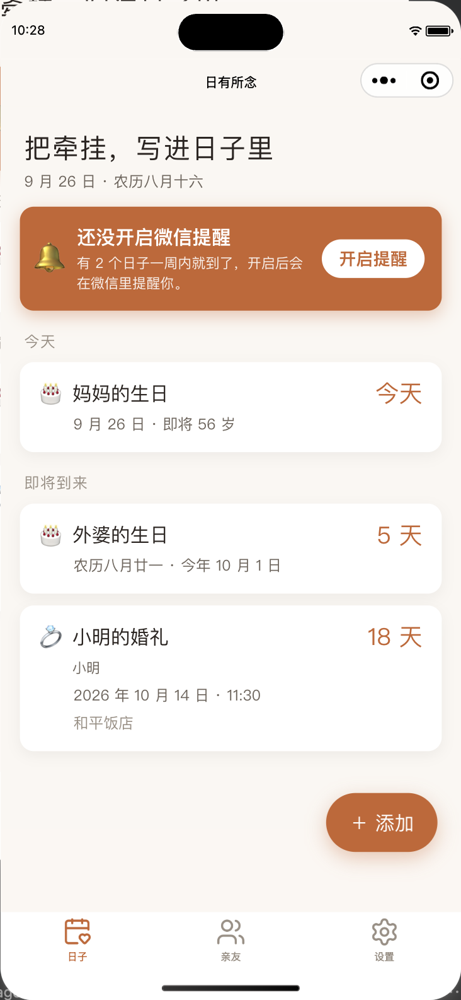
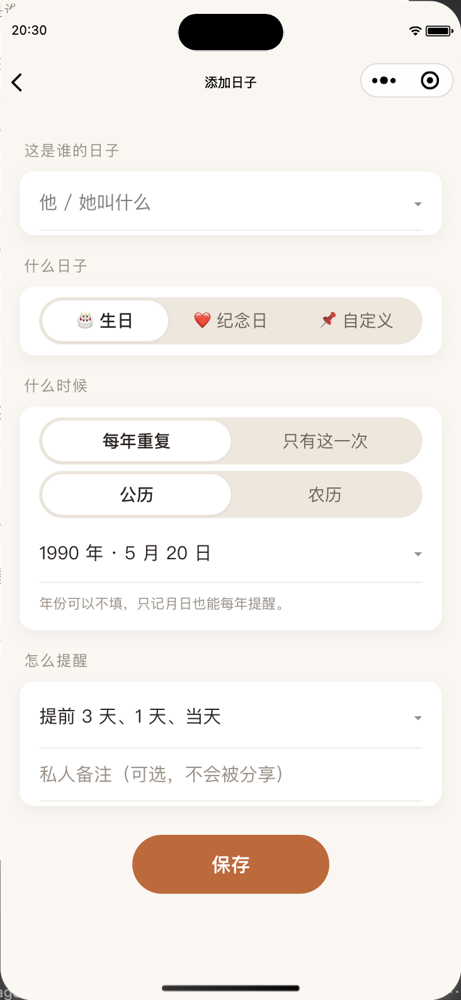
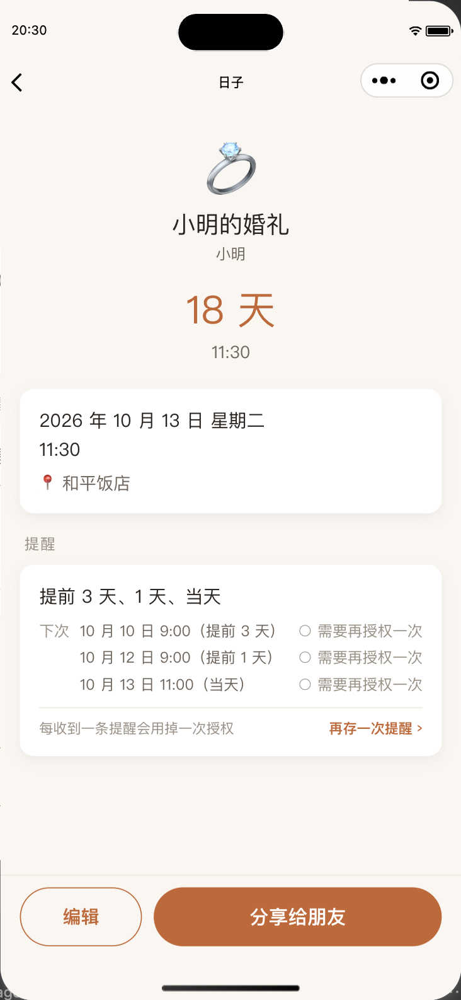

01 / 生日
她的农历生日，
不用每年再问一遍。
农历或公历，按习惯记下。下一次生日，替你算好。
THE DAYS THAT MATTER
有些日期，不只是日历上的数字。
它们连着一个人，一段故事，一份心意。
农历或公历，按习惯记下。下一次生日，替你算好。
在一起的日子、结婚纪念日，让平常的一天有了意义。
婚礼、毕业、乔迁……只发生一次，也值得认真记下。
以「人」为中心，牵挂自然有归处。功能示意
A LITTLE THOUGHTFULNESS
生日、纪念日都放在同一个人下面。想起谁，就能看看关于他的那些日子。
长辈过农历，朋友过公历，都能记。不必每年重新换算日期。
设置提前提醒，在微信里接收订阅消息。给祝福、礼物和相聚，留出准备的时间。
把日子或亲友卡片分享给家人朋友，对方添加后，可以按自己的安排设置提醒。
微信订阅消息每授权一次可发送一条提醒，可在小程序内补充提醒次数。
A CLOSER LOOK
小程序测试环境的真实界面截图，内容为示例。
截图来自仓库已有测试记录，部分界面可能与当前版本不同。

重要的日子，打开就能看到。

日历、提醒和备注，按自己的方式来。

看提醒、记地点，也能分享给朋友。
不读取你的通讯录、手机号或位置。
私人的备注留给自己，分享的内容由你选择。
也可以在小程序设置中，清空自己的全部数据。
GOOD TO KNOW
开始之前，先聊聊这些小事。
不需要。在微信里搜索「日有所念」小程序，即可打开使用。记下日子后，下次可以从微信最近使用的小程序中找到它。
会。添加生日时选择农历，按农历日期记录，小程序会计算下一次对应的日子，不用你每年手动换算。
微信的一次性订阅消息，每授权一次可发送一条提醒。「总是保持以上选择」可以减少弹窗，但不会变成永久提醒。你可以在小程序内补充次数，并查看日子的提醒状态。
不能。分享只展示你选择公开的内容，私人备注不会随卡片分享。朋友添加的是独立副本，你后续修改或关闭分享，不会改变对方已经添加的日子。
KEEP SOMEONE IN MIND
从最想惦念的那个人开始吧。
微信扫一扫，把牵挂记下来。
微信扫码打开 · 微信内可尝试长按识别
也可保存图片，在微信扫一扫中从相册选择
在微信搜索这个名字，与牵挂相遇。